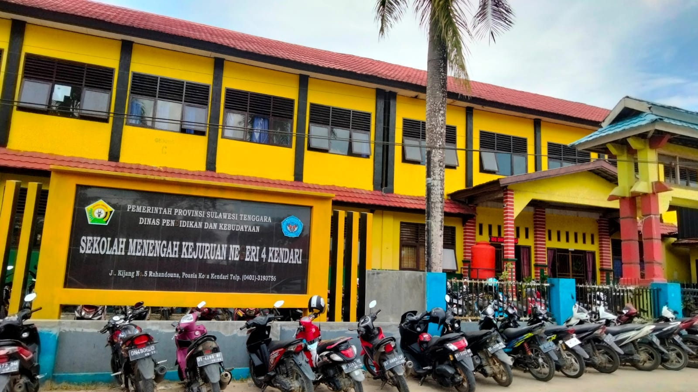

Tentang Sekolah

SMKN 4 Kendari bertempat di kawasan Jl. Kijang Kelurahan Rahandouna Kecamatan Poasia Kota Kendari Provinsi Sulawesi Tenggara. Sekolah ini didirikan pada tahun 1996 dengan nama SMIK (Sekolah Menengah Industri dan Kerajinan) yang dalam perkembangannya telah berubah nama menjadi SMKN 4 Kendari, pada mulanya sekolah ini hanya memiliki 2 program studi yakni Kriya Kayu dan Kriya Tekstil, tetapi seiring perkembangan teknologi maka sekolah ini membuka program studi yang baru pada tahun 2004 yaitu Teknologi Komputer dan Jaringan, dan pada tahun ajaran 2009 telah dibuka program studi Multimedia. Jumlah siswa SMKN 4 Kendari pada tahun 2009 yaitu sebanyak 486 siswa.
Saat ini SMK Negeri 4 Kendari kendari memiliki 6 Jurusan/Program Studi Keahlian, yaitu:
- Kriya Kayu dan Kriya Tekstil
- Teknik Komputer Jaringan (TKJ)
- Multi Media (MM)
- Rekayasa Perangkat Lunak (RPL)
- Desain Komunikasi Visual DKV)